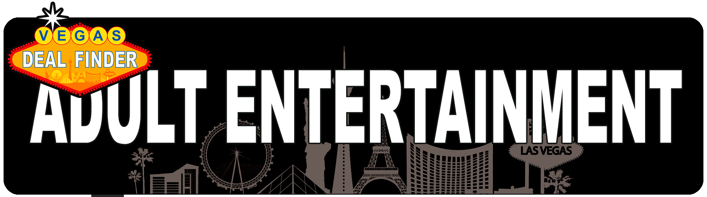

<template>
  <div class="MainContainer">
    <div class="TitleImg center">
      
    </div>

    <div class="triple-wide">
      <div class="first-container">
        <h4>Weed Dispensary Pro Tips for Visitors </h4>
        
        <p>Many dispensaries are located on “Stripper Row,” actually an industrial road full of warehouses and the like but also full of strip clubs and, now, dispensaries. Some of the most Vegas-y dispensaries (Planet 13, Reef) are located in this area in very near proximity to some of Vegas’s best gentlemen’s clubs (The Rhino, Sapphire). Staying at Circus Circus or the Strat puts you very close to all of these things, and they’re also the best values on the Strip (and both have newly remodeled rooms!). And now your Sin City weekend is planned, you’re welcome. </p>
      </div>
      <div class="second-container">
        
        <p>You can buy weed in Nevada with zero hassle from the cops. The introduction of legal recreational cannabis in 2017 opened the door to quick and easy sales -- no medical marijuana card required. But there's still a lot of confusion about where you can actually enjoy the stuff. Despite the boom of cannabis culture and tons of dispensaries in Las Vegas, the topic remains a bit complicated. So let's sort it all out with your complete guide to lighting up a fat one in Sin City. </p>
        <h4>Is marijuana legal in Nevada for everyone? </h4>
        <p>Anyone who is 21 and over can purchase cannabis in Nevada for recreational purposes. Just bring a valid government-issued driver's license, ID or passport. It can't be expired and must be scannable to confirm it's the real deal. </p>
        <h4>Do dispensaries keep a record of my personal information? </h4>
        <p>No. It is not permitted to keep information for recreational customers.  The records are destroyed daily and are not reported to the state. Please note, your information can be used for marketing purposes if you elect to join a dispensory  loyalty program. </p>
        <h4>Can I consume marijuana in public?  </h4>
        <p>Legally, no, But it happens all the time on the Strip. Consumption is only legal in a private residence. There are no consumption lounges or any other public space where smoking, eating, or ingesting cannabis is allowed.  </p>
        <h4>No big deal. I can just smoke in the privacy of my hotel room, right? </h4>
        <p>Eh, not really. A hotel is not a private residence where you can freely smoke weed -- and neither is an apartment if the owner or landlord has rules against it. But let's stay focused on hotels. Most big resorts on the Strip have a casino and no one wants to risk their gaming license by mixing gambling with marijuana, which is still illegal in the eyes of the federal government. Even resorts without casinos on the Strip tend to have strong rules against smoking of any kind in their rooms these days.  But let's be real. If you consume cannabis in a hotel room without bothering anyone else, will you get in trouble? Probably not. Especially if you stay away from products that produce smoke. Just know the rules and consequences -- and use your best judgment  </p>
      </div>
      <div class="third-container">
        
        <h4>Medical vs. Recreational</h4>
        <p>Out-of-state medical cards are accepted in Nevada, which typically means cheaper bud and faster service (just bring all your paperwork). Some places are recreational only, though, and our list highlights the best recreational picks. As with restaurant menus, online dispensary menus tend not to be up-to-date with current inventory, so if there is something very specific you want, you may want to give them a call first. </p>
        
        <h4>Ways to save </h4>
        <p>Lots of places offer freebies and special discounts for first-timers as well as customer loyalty programs and different daily deals. If you’re new to cannabis, every dispensary is staffed with friendly budtenders to help you navigate your way to living your best high. As a general rule, the closer you are to the Strip, the more expensive the place is -- just like with everything else on or near the Strip, you are paying the Vegas tourist tax. Also be aware of additional taxes, as very few places include the 10% sales tax in their sticker price. </p>
        <button type="button" name="button" id="dispListBtn"><a href="#/dispList">DISPENSARY LIST</a></button>
      </div>
    </div>

  </div>
</template>
